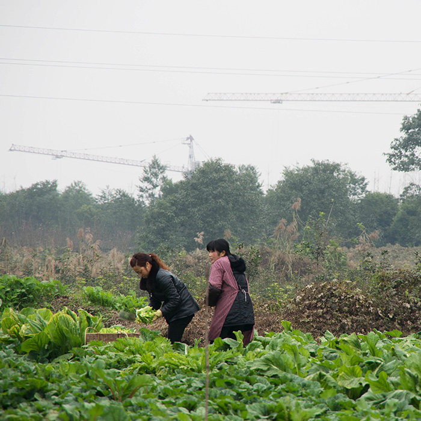

China’s Generation Green
The Toronto Star/International Reporting Program
View project
Families flee as China’s air sickens their children
The Toronto Star
View project

Strangers at Home
Global Reporting Centre
View project
A Soldier’s Tale: ‘Nobody Understood What I’d Done’
The Tyee
View project
A Soldier’s Tale: ‘It’s Always There’
The Tyee
View project
The Public Debate About Torture
Retro Report
View project
Fixing the Journalist Fixer Relationship
Global Reporting Centre/Nieman Reports
View project